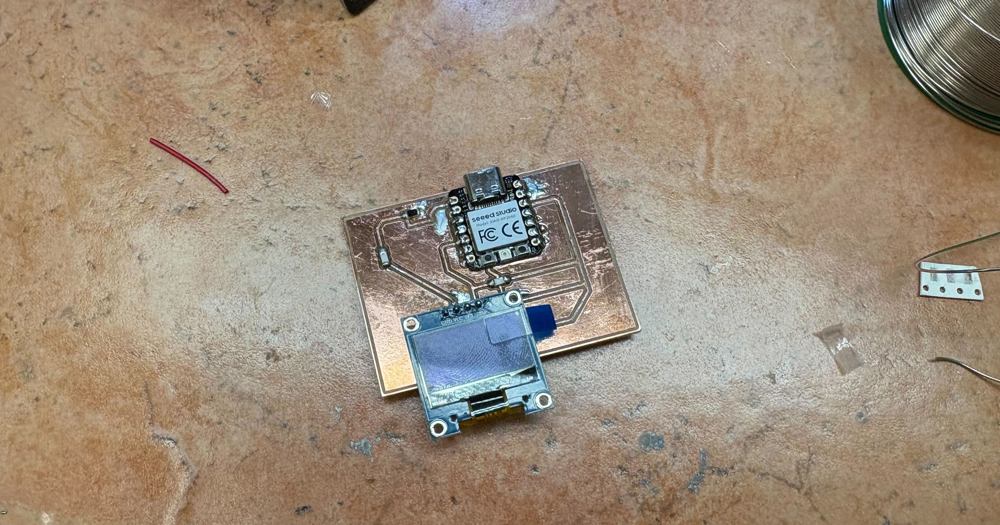

Week 6: Electronic Production
This week we worked on milling our own PCB designs. We use the OtherMill to mill the copper boards and use bantam tools to process the brd files into gerber files.
I made a few PCB designs this week. I ended up milling something that can sense light and display something using that on a display. I use a Phototransistor to do this. phototransistors are simpler than photodiodes for this, with no separate amplification needed, and the RP2040's ADC can read them directly. i initially considered an LDR but phototransistors have way better temporal response, as well as is much larger.
Here is the schematic. This uses pull-up resistors for the display for the SLC and SDA ports. I also added a resistor to the phototransistor to limit the current going through it. Fusion 360 also gives you a bill of materials.

| Part | Value | Device | Footprint Name | Detailed Description | CATEGORY | DATASHEET | DESCRIPTION | MANUFACTURER | MPN | OPERATING_TEMPERATURE | PACKAGE_SIZE | PACKAGE_TYPE | PART_STATUS | PITCH | ROHS | SERIES | SUBCATEGORY | THERMALLOSS | TYPE |
| JP1 | PINHD-1X4 | PINHD-1X4 | 1X04 | Pin Header | Connectors | Header-Straight-4 Position | Through Hole | 0.100" (2.54mm) | Headers | Male Pins | |||||||||
| R1 | R1206 | R1206 | Resistor (US Symbol) | ||||||||||||||||
| R2 | R1206FAB | R1206FAB | Resistor (US Symbol) | ||||||||||||||||
| R3 | R1206FAB | R1206FAB | Resistor (US Symbol) | ||||||||||||||||
| U$1 | XIAO_RP2040XIAO_RP2040 | XIAO_RP2040XIAO_RP2040 | XIAO_RP2040 | ||||||||||||||||
| U$2 | Q_PHOTOTRANSISTOR-NPN1206 | Q_PHOTOTRANSISTOR-NPN1206 | OP1206 |
Here is the routing of the board. We set the design rules to 16 mm because of the size of our tools. Instead of routing ground, I used polygon pour to make it easier to connect to ground, and more importantly, it acts as a heat sink during soldering—the ground pins don't overheat as easily.

Then, I added it to the Bantam tools software:

This requires 2 tools, because some of the footprint for the RP2040 board requires the 1/64 tool, and the rest just needs 1/32. There were a few changes I made to the board (using a FAB-version of the resistor) that reduced the need for 1/64 milling.
The final step was to solder the board together. I used 5k resistors for the pull-up resistors and a 5k resistor for the phototransistor. The pull-ups on i2c are 5k bc that's what the OLED spec sheet suggested for 3.3v operation.

Final Product!

Todo: I need to upload the code to the board and test this. Here's the basic code I'm using to test this:
import board
import busio
import analogio
import adafruit_ssd1306
from time import sleep
# setup i2c for display
i2c = busio.I2C(board.GP5, board.GP4) # SCL, SDA - adjust pins
display = adafruit_ssd1306.SSD1306_I2C(128, 32, i2c) # or 128x64 if that's your display
# setup phototransistor on ADC
photo = analogio.AnalogIn(board.GP26) # adjust pin
def read_light():
# raw ADC is 0-65535, normalize to 0-100
raw = photo.value
return int((raw / 65535) * 100)
display.fill(0)
display.show()
while True:
light = read_light()
display.fill(0)
display.text(f"Light: {light}%", 0, 0, 1)
# visual bar
bar_width = int((light / 100) * 128)
display.fill_rect(0, 16, bar_width, 8, 1)
display.show()
sleep(0.1)